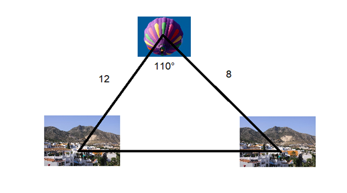
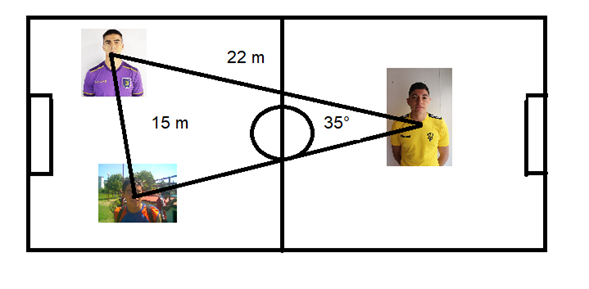
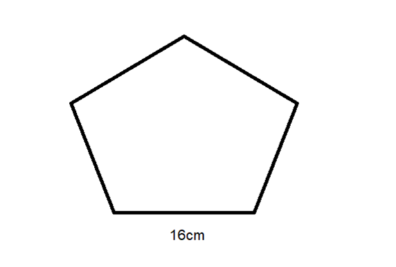
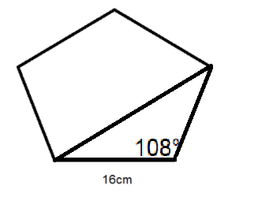

Trabajemos otro problema.
Desde lo alto de un globo se observa un pueblo A con un ángulo de 50º, y otro B, situado al otro lado y en línea recta, con un ángulo de 60º. Sabiendo que el globo se encuentra a una distancia de 12 kilómetros del pueblo A y a 8 del pueblo B, calcula la distancia entre los pueblos A y B.
Vista - Benalmádena Pueblo.jpg

La distancia entre el pueblo A y el pueblo B la llamaremos C.
Aplicando ley de cosenos tenemos.
$c^2 = 12^2 + 8^2 - 2(12)(8) cos(110)$
$c^2 = 273$
$\sqrt{c^2} = \sqrt{273}$
$c=16.5227116$ Km aproximadamente.
Que es la distancia entre los pueblos.
Tres amigos se sitúan en un campo de fútbol. Entre Juan y José hay 15 metros, y entre José y Emilio, 22 metros. El ángulo formado en la esquina de Emilio es de 35º. Calcula la distancia entre Juan y Emilio.

Determinaremos la distancia entre Juan y Emilio, para esto utilizaremos ley de Senos
$\frac{15}{sen35} = \frac{22}{sen \alpha}$
$\frac{15}{0.57355764} = \frac{22}{sen \alpha}$
Regla de tres simple
$\frac{(22)(0.57355764)}{15} = sen \alpha$
$0.84124544 = sen \alpha$
Para encontrar $\gamma$ realiza el siguiente procedimiento en la calculadora.
- Presiona la tecla Shift
- Luego presiona la tecla sen
- En la pantalla se despliega, $sen^{-1}$
Escribe el número 0.84124544
- Cierra el paréntesis derecho y presiona la tecla =
El resultado es 57.26
Otro problema
El lado de un pentágono regular mide 16 cm.¿Cuánto mide cada una de sus diagonales?


Apliquemos ley de cosenos
la diagonal la llamamos “d”
$d^2 = 16^2 + 16^2 - 2(16)(16) cos 108$
$d^2 = 828$
$\sqrt{d} = \sqrt{828}$
$d=28.74$
Otro ejemplo
Un ingeniero topógrafo que se le olvidó llevar su equipo de medición, desea calcular la distancia entre dos antenas. El ingeniero se encuentra en el punto A, y con los únicos datos que tiene hasta ahora son las distancias de él respecto a las otras antenas, 100 m y 110 m, respectivamente, también sabe que el ángulo formado por las dos antenas y su posición actual “A” es de 28° ¿Qué distancia hay entre las dos antenas?
Apliquemos ley de cosenos
$d^2 = 100^2 + 110^2 - 2(100)(110)cos28$
$d^2 = 2675.1529$
$\sqrt{d^2} = \sqrt{2675.1529}$
$d=51.72180$ m
Realiza las siguientes actividades.